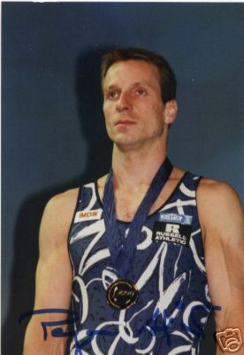

Aljaz Pegan (YUG/SLO)
1994 and 2004 European HB
Champion
2005 World HB Champion

Medal Total
World Championships: 1 Gold, 2 Silver
European Championships: 2 Gold, 1 Bronze
World Cup: 1 Silver, 1 Bronze
Aljaz was born on June 2, 1974.
Competition Results
1990
Blume Memorial: 27th AA
1991
Jr. European Championships: 12th AA, 6th HB
Medico Cup: 4th AA
1992
European Championships: 48th AA
1993
Golden Sands International: 13th AA
Hungarian International: 1st HB
Kosice International: 18th AA, 1st HB
Ljubljana International: 14th AA
Nikon International: 23rd AA, 3rd HB, 7th PB
Rome Grand Prix: 13th AA
World Championships: 75th AA (prelims)
1994
DTB Cup: 1st HB
European Championships: 1st HB
Swiss Cup: 1st HB
World Championships (Brisbane): 6th HB
1995
Cottbus International: 2nd HB
DTB Cup: 2nd HB
Swiss Cup: 1st HB
1996
Cottbus International: 8th HB
DTB Cup: 4th HB
French International: 1st HB
Gander Memorial: 10th AA
Swiss Cup: 1st HB
World Championships: 4th HB
1997
Brno Mixed Pairs: 3rd Team
Cottbus International: 3rd HB
World Stars: 3rd PB, 5th HB
1998
DTB Cup: 8th PB
European Championships: 8th HB
Swiss Cup: 3rd HB
1999
Cottbus International: 7th HB (prelims), 15th PB (prelims)
DTB Cup: 2nd HB, 3rd PB
Samboo Cup: 7th HB
Swiss Cup: 4th HB
2000
European Championships: 3rd HB
Ljubljana Gym: 2nd HB
World Cup: 2nd HB, 3rd PB
2001
Cottbus International: 1st PB, 1st HB
DTB Cup: 7th PB
French International: 1st HB, 8th PB
Gander Memorial: 10th AA
Glasgow Grand Prix: 5th PB, 6th HB
Mediterranean Games: 3rd HB
Swiss Cup: 7th AA
2002
Cottbus International: 3rd HB
DTB Cup: 1st HB
European Championships: 4th HB
Glasgow Grand Prix: 3rd HB
World Championships: 2nd HB
2003
Cottbus International: 1st HB
DTB Cup: 3rd HB
NoyNoy Grand Prix: 2nd HB
World Championships: 2nd HB
2004
Cottbus International: 1st HB
DTB Cup: 6th HB
European Championships: 1st HB
World Cup: 5th HB
2005
European Championships: 5th HB
World Championships: 1st HB
This page was created on December
20, 2005.
© Gymn Forum